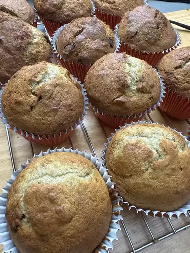

Banana Muffins

Start your day in the most delicious way: With homemade banana muffins!
This banana muffin recipe is beloved by the Allrecipes community because it's quick, delicious, and easy to customize.
ingredients
- Flour: All-purpose flour adds structure to the banana muffin batter.
- Leaveners: Baking soda and baking powder act as leaveners, which means they help the muffins rise.
- Salt:A pinch of salt enhances the flavors of the other ingredients.
- Bananas: Of course, you'll need mashed bananas!
- Sugar: White sugar sweetens things up a bit.
- Egg: An egg binds the muffin batter together and lends moisture.
- Butter: Melted butter adds even more moisture and richness.
Steps
- Sift the dry ingredients together in one bowl. Mix the wet ingredients in another bowl.
- Fold the dry mixture into the wet mixture.
- Spoon the batter into prepared muffin tins. Bake the muffins in the preheated oven.